In this activity you will log in to Amazon Web Services using a QUT student account, create a Linux virtual machine in the cloud, use a secure shell client to connect to the virtual machine, and implement a "Hello World" web application. Finally - and importantly - you will terminate the virtual machine.
Note that there are a number of ways you can connect to the VM - it is not necessary for you to use all of them today. Please talk to your tutor if you run into difficulties or you are unsure of what to do.
A dedicated AWS workspace has been created to allow you to access cloud resources using your QUT credentials. This workspace is to be used strictly for academic purposes. Please check
After completing this step you will have a machine running, ready for remote connection and management. We will use Ubuntu 22.04 for this year. You may use later/Older versions if you wish and if you have some Linux expertise.
Background: You will use an Amazon t2 micro instance running Ubuntu 22.04 to complete the rest of this activity. Always use the smallest instance that allows you to complete the task. Higher spec machines cost more and you won't often need their capabilities.
Please check
After completing this step, you can work on your VM in a browser tab.
Background: The AWS web-based Session Manager provides convenient interactive access to the VM command line environment.
Start your virtual machine and navigate to the AWS Instances page.
Select your running instance and click “Connect”. 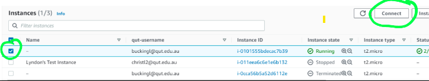
Go to the “Session manager” tab, and click “Connect” 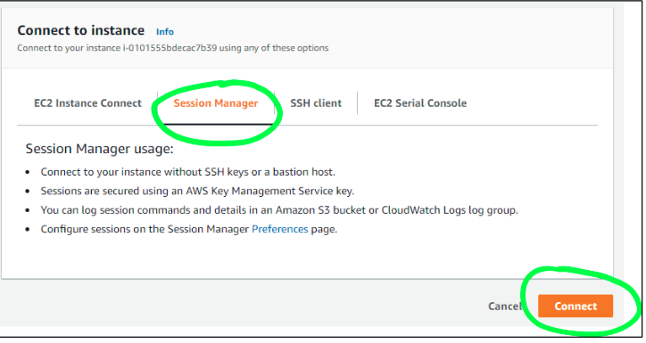
Successful log in will lead to a Linux bash session on the VM, hosted in your browser. Use the command cd ~to go to your home directory to start work.
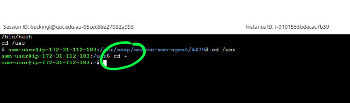 At this point you may proceed to Step 6 (hosting a simple HTTP server) should you wish. The intermediary steps explore alternative ways of connecting to the VM.
This step describes the pre-requisites needed to connect to your VM via SSH using a command shell or GUI client. Once you have completed these instructions, Step 5 tells you how to put this into practice to actually connect to the machine.
These steps provide an important alternative to the approach in Step 3 above.
Background: Secure shell (SSH) is the primary management tool for Linux virtual machines. File transfer can be achieved using SFTP or SCP.
Secure shell (SSH) is the primary management tool for Linux virtual machines. File transfer can be achieved using SFTP or SCP.
which ssh/usr/bin/sshsudo apt install openssh-clientUsing the VM’s private access key with your SSH client allows you to log on to the VM, install software, and execute programs.
Q:\CAB432\2021_02\AWS_Keys\LawrenceCAB432_key2.pem13.211.103.201
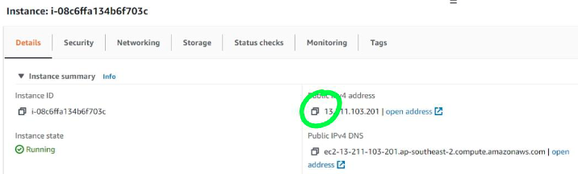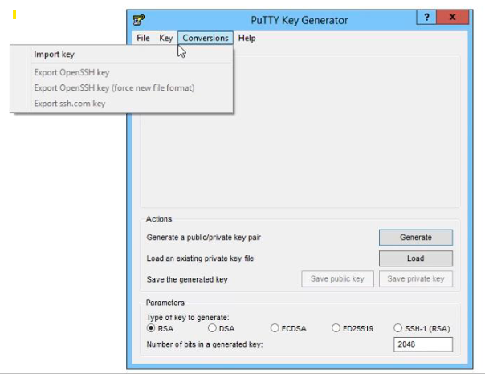
Save the private key file. In this example, we saved as Q:\CAB432\2021_02\AWS_Keys\LawrenceCAB432_key2.ppk
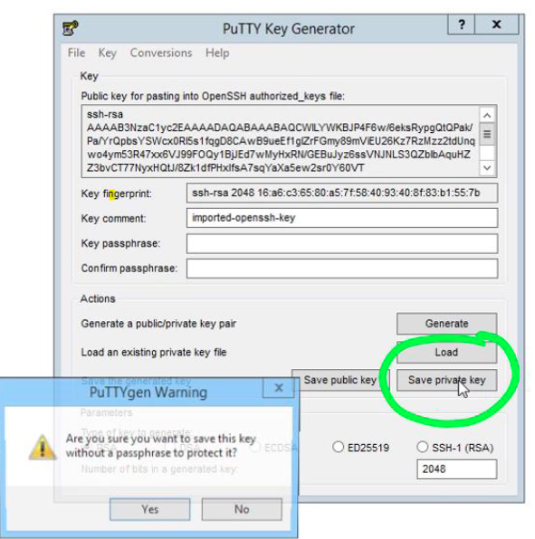
Run putty, and on the session tab, insert public IP address of VM
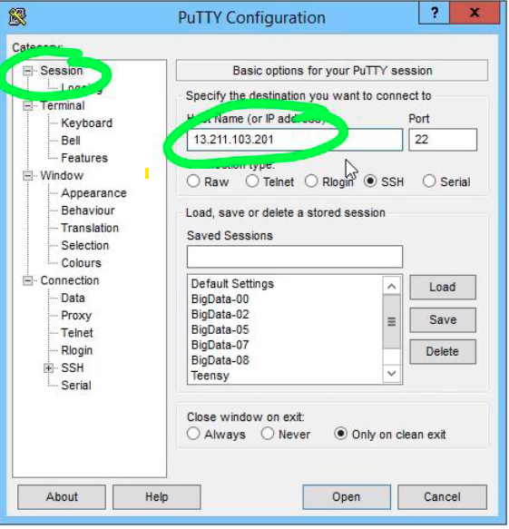
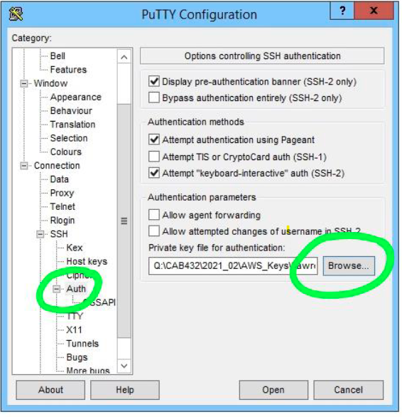
ubuntu when prompted. This will open a linux bash session on the VM.ssh -i /Q/CAB432/2021_02/AWS_Keys/LawrenceCAB432_key2.pem -l ubuntu 13.211.103.201After completing this step, you will be able to access a basic web site hosted on the VM. Installing Python lets you host a simple HTTP web site.
To undertake this step, you must have connected to the VM using one of the methods described above.
sudo apt-get install pythonmkdir server && cd serverecho >hello.html '<html><body><h1>HelloCAB432!!!</h1></body></html>'
python -m http.server 3000http://13.211.103.201:3000/hello.html. Replace with the IP address of your own VM.A note on security: The Python HTTP Server is a great tool for testing, local development and quick learning exercises like this one. However, it's not designed with security in mind and lacks the robustness required for a production environment. In future weeks we will explore web servers that are specifically designed to host production-level applications.
Even stopped instances continue to incur AWS charges, so when you complete the exercise, terminate the instance.
If you are using a Linux machine, you can skip this step.
In some earlier versions of this unit we supported Docker under both Linux and Windows.
Setting up WSL
We will be using the following instructions to set up WSL on Windows 11.
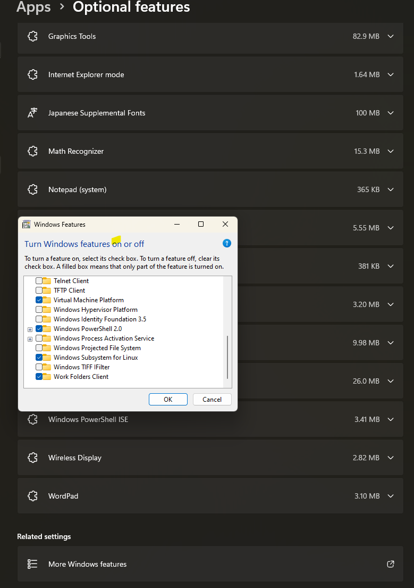
wsl --install -d ubuntu-22.04
If this dosen't work, you can check the following:
wsl --shutdownSFC /scannow in PowerShell to check for any system file corruption. You might need to restart the computer after this.wsreset in PowerShell.Get-AppXPackage -allusers | Foreach {Add-AppxPackage -DisableDevelopmentMode -Register "$($_.InstallLocation)\AppXManifest.xml"}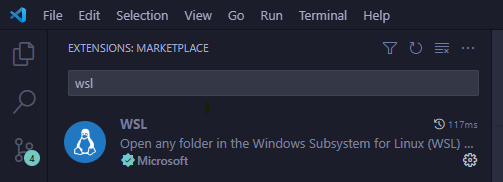
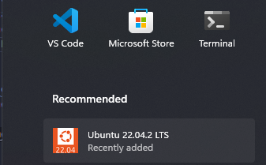 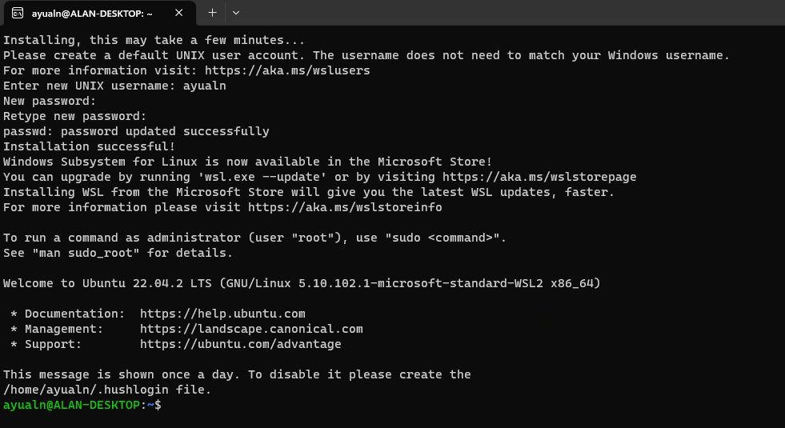
code .. This will install/open the current dir in VScode. You might want to trust the current workspace. On the bottom left hand side, you can see that the vscode terminal is connected to the WSL environment.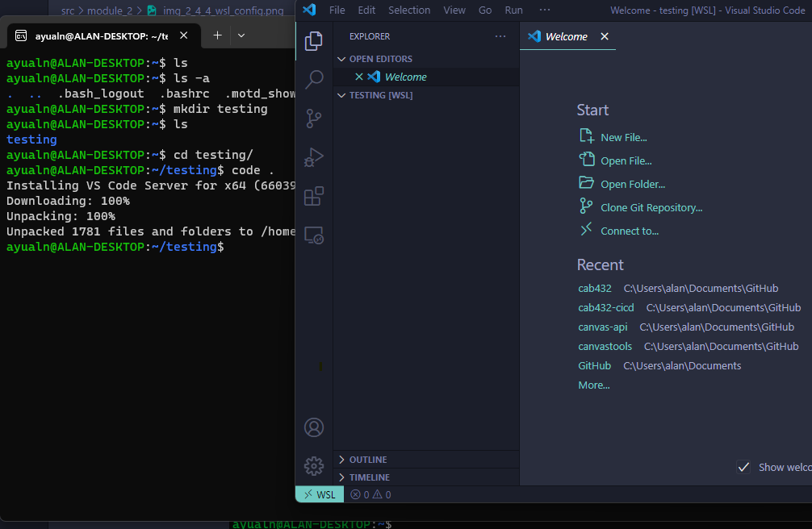
Virtual Box Approach
Oracle’s Virtual Box is a very widely used VM manager for Windows. It is very convenient and really doesn’t take too much time to set up and use productively. The downloads are found at: https://www.virtualbox.org/
When you look at the page, as shown above, you will also see a link to pre-built images. These are for Oracle’s versions of Linux, so for consistency with our cloud images, do not click on this link. Instead, follow the download and installation instructions that you find in this blog below: http://www.beopensource.com/2018/02/Install-Ubuntu-18.04-Virtual-Box.html
We have not updated this material for some time as we now recommend the WSL approach if you are working under Windows. Please let us know if there are any issues and we can probably help you out.
If you have questions about this practical, please post them on the